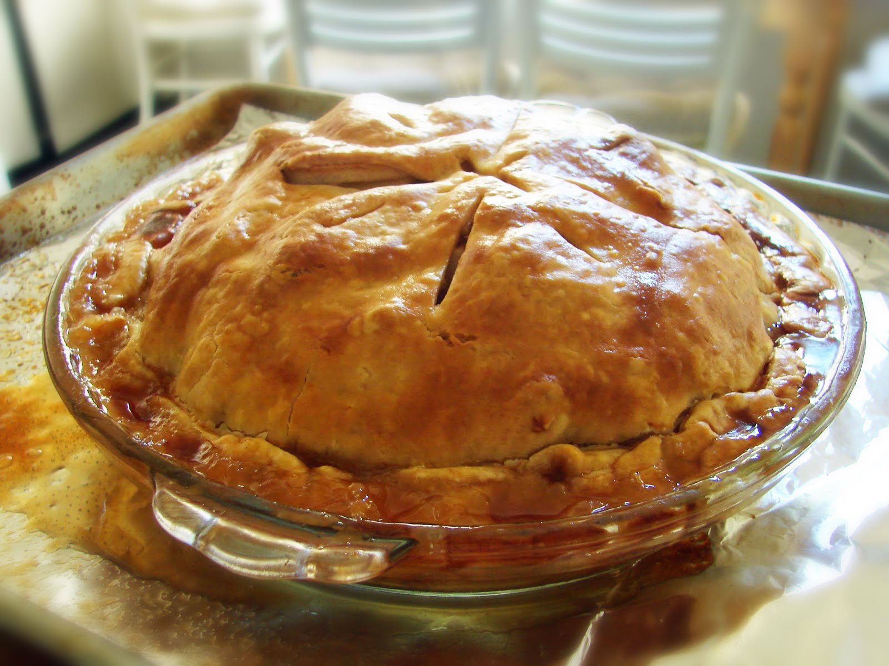

Apple Pie

Credits: John Mitzewich
Give it a chance
Home
Enjoy the fall favorite dessert by following this recipe for a classic apple pie. Thankfully it's easier to make than it looks with ingredients you can likely find at home.
Whether you make it on a cozy autumn day, or whenever your craving calls for it, we hope you give this recipe a chance soon.
Ingredients
- 6 tablespoons unsalted butter
- 1/2 cup brown sugar
- 1/4 cup white sugar
- 1/4 cup water
- 1/4 teaspoon ground cinnamon
- 1 pinch salt
- 1 (14.1 ounce) package pie crust double-crust pie pastry, thawed (such as Pillsbury)
- 4 large red apples, cored and thinly sliced
Steps
- Preheat the oven to 425 degrees F (220 degrees C).
- Melt butter in a large saucepan over medium heat. Stir in brown sugar, white sugar, water, cinnamon, and salt. Bring to a boil, stirring constantly to dissolve sugar, then remove caramel sauce from heat.
- Unroll a pie crust and press into a 9-inch pie dish. Place apples into crust. Unroll second pie crust on a work surface and cut into 8 (1-inch-wide) strips. Arrange strips in a criss-cross pattern over apples or weave into a lattice crust. Crimp bottom crust over ends of lattice strips with your fingers.
- Spoon caramel sauce over pie, covering lattice strips; let remaining sauce drizzle over crust and onto filling.
- Bake in the preheated oven for 15 minutes. Reduce heat to 350 degrees F (175 degrees C) and continue baking until crust is golden brown, caramel on top crust is set, and filling is bubbly, 35 to 40 more minutes. Allow to cool completely before slicing.